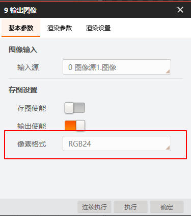

问题描述
环境：VM4.x + VS2013及以上
问题：如何获取渲染图像的数据？
解决方法
-
存图到本地。
-
在输出图像模块的【基本参数】中选择【像素格式】，可选RGB24或者MONO8。

-
通过【渲染设置】中的【前项存储设置】订阅相应模块数据，获取渲染结果。
-
开启【基本参数】中的【存图使能】，并在设置存图路径和文件命名。方案运行时，即可将渲染图保存到本地。
-
获取渲染图像数据，可通过流程获取，也可通过模块输出。
-
通过流程获取：通过流程的【输出设置】订阅输出图像模块，从而获取流程输出图像数据。可参考如何通过流程输出或者模块输出获取数据结果。
-
通过模块输出：若【像素格式】为RGB24且【渲染设置】中的前项存储设置订阅响应模块数据，对输出图像模块进行实例化，即可获取带渲染的彩色图像数据；若【像素格式】为Mono8且【渲染设置】中的前项存储设置订阅响应模块数据，即可获取带渲染的灰度图像数据。相关代码如下。
SaveImageTool saveImage=(SaveImageTool)VmSolution.Instance[“流程1.输出图像1”];
Var saveImageResult=saveIamge.ModuResult.OutputImage;
byte[] imageData= saveImageResult.ImageData;
int imagePixelformat= saveImageResult.Pixelformat;